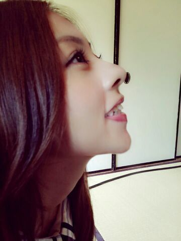

| 2014/06 10 Tue | ポリン姫をやらせて頂きました。 ♪♪ ろってぃ− |
んにゃ。 まにだよ (/*・ω・)/

こんにちわ !!
今日はプリンシパル14回目の公演でした^ ^
残り 8公演ですね !!
そして私今日は、、、、、主役 !!!!!!
『 ポリン姫 』をやらせて頂きましたぁぁ !!
ありがとうございます. ありがとうございます.
本当にありがとうございます..*
本当に 楽しくポリンをすることができました^ ^
ポリン→まひろ
ベル→まいやん
パム→かずみん
マキア→生ちゃん とゆ−ことで、劇中の歌が良かったと言ってくださる方もいました*´ω`*やったね
今までの公演で、立候補をした役に選ばれない度に、色んなメンバーが「まに〜(T-T)」「まに〜(T-T)」と声をかけてくれました。
だから「皆、いつも慰めてくれてありがとう*´`*」って言ったら、「 違うよ!! 皆がまに〜まに〜って言うのはまひろに2幕 出てほしい!! って思ってるからだよ!!! 」って言ってくれました（つд；*)
「ろってぃ−に2幕 出てほしいから、ろってぃ−とは立候補する役被りたくない!!」って言ってくれるメンバーもいました...
なのに、、立候補した役に選ばれない自分が悔しかったりもしました。
でも、今日!! ポリン姫をやると決まったらたくさんのメンバーが「まによかったね」「まひろ頑張るんだぞ」「ろっちーろっちー」と言ってくれて、本当に本当に嬉しかったよ(´；ω；｀)

本当に皆ありがとう。
******************************
ななせとこないだ一緒にハーフツインした時の写真だよ*´`* なにわ3人衆がんばるゾ..*笑
あっ、そしてそして 生駒ちゃん☆☆☆
14位本当に本当におめでとーーー＼(^o^)／
楽屋でメンバーとマネージャーと見ていたのですが、嬉し過ぎて皆で飛び上がり 叫び 動物園の様になりました。その位本当に嬉しかったんです♪♪
同い年として 誇らしいです。
これから先、色々と不安もあるだろうし メンタルがズタズタになるときもきっとあると思う。
でも 生駒には乃木坂46メンバー、スタッフさん、家族...たくさんの見方がついています。
生駒ちゃん大好きだよ*^^* 頑張ってね..*
そして、れなさん5位おめでとうございます !!!
何だか 不思議です..*れなさんが 乃木坂に兼任してくださっていること...
本当にありがたく感じています。
れなさんがもっともっと上にいける事を願っています^ ^
れなさん、これからもよろしくお願いします。
blog読んでくださり ありがとうございます*´ω`*
おやすみなさい...のし

コメント(267)
2014/06/10 00:30